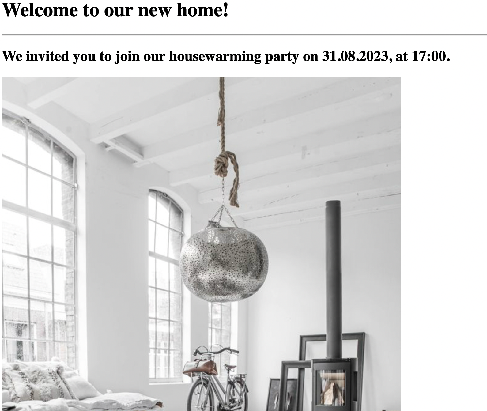
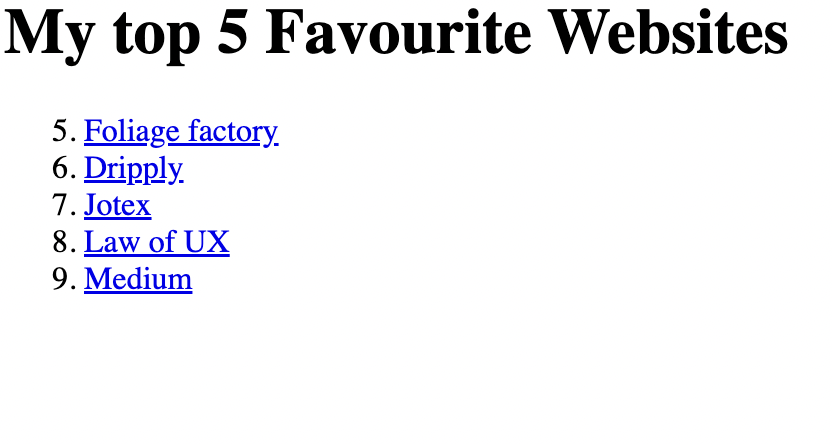

<!-- TODO 1: Create the HTML Boilerplate -->

<!-- TODO 2: Add Your previous projects' HTML into the public folder -->

<!-- TODO 3: Take screenshots of your project previews and add the images to the images folder -->

<!-- TODO 4: Add titles/subtitles etc. -->

<!-- TODO 5: Add a link to the project pages -->

<!-- TODO 6: Add images to show the project previews
HINT for TODO 6: You can use the height attribute set to 200 to make the image smaller:
https://developer.mozilla.org/en-US/docs/Web/HTML/Element/img#attr-height -->

<!-- TODO 7: Add the Contact Me and About Me page links -->
<h1>Irene Lin's portfolio</h1>
<h2>Hi, I'm Irene Lin, I'm a web-developer</h2>
<hr>
<h3><a href="/3.4 Birthday Invite Project/index.html">Housewarming project</a></h3>

<h3><a href= "/3.2 Anchor Elements/index.html" >My top 5 Favourite Websites</a></h3>

<hr>
<h4><a href="../4.1 Webpages/public/about.html">About me</a>
    <a href="../4.1 Webpages/public/contact.html">Contact</a>
</h4>
